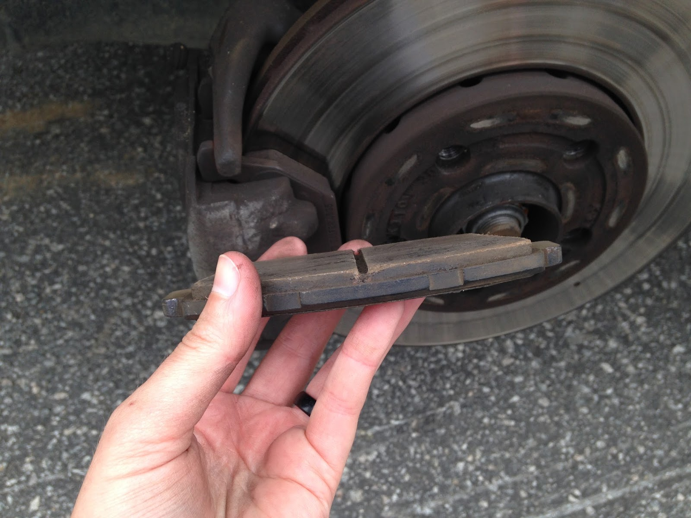
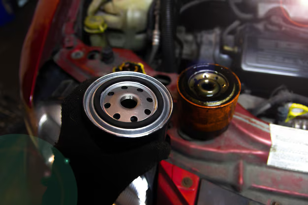
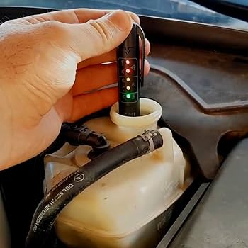

Galeria de Fotos
Evidências fotográficas registradas pelo mecânico Ricardo durante o diagnóstico técnico da OS #452:
TROCAR

Pastilha de freio desgastada no limite.
OK

Filtro de óleo antigo removido.
ATENÇÃO

Análise de contaminação do fluído de freio (umidade elevada).